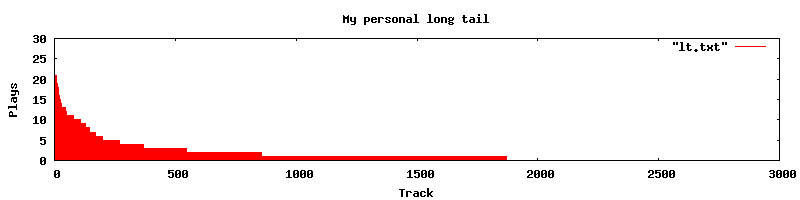

There's a long tail in my iPod!

In the new book, The Long Tail, Chris Anderson explains, among other things, why music recommender systems will continue to grow in importance as the world of music moves online. Mr. Anderson says there are two rules in the new long tail world:
- Make everything available
- Help me find it.
One aspect of the long tail that is perhaps less obvious is that we have our own personal long tails. For instance, if we look at the typical iPod user, we'll see that the 80/20 rule applies: 80% of their listening is confined to 20% of the songs. (See some data in this blog entry). Plotting the song play data we see the familiar long tail power curve. For example, here's a plot of my listening behavior.

There's a long tail right there inside my iPod.
I have about 9,000 songs in my listening collection, I'm only showing the top 3,000 in this plot. This plot shows how many times I've played each song in my music collection. I've played some songs more than twenty times, but there are about 7,000 songs in my collection that I haven't listened to at all yet. This plot represents about 500 hours of listening (averaging about an hour of listening per day since I've had this iPod).
Clearly just as with Amazon and Netflix, I have my own personal long tail. There are a few personal 'hits', but there are many more songs that are rarely listened to, or not listened to at all. Now since this is all my music I know that I really like many (if not most) of those 7,000 orphans. It is just that it is so hard to listen to them. When I'm going for a walk or a drive, I don't have time to fashion a playlist, I never think ahead and make one on my Mac, so I end up gravitating to the old favorites. The builtin tools that we find for exploring our music collections (shuffle play) leaves us with iPod whiplash from listening to playlists that go from Raffi to Rammstein.
Clearly, just as recommender tools are going to be increasingly important in the for the iTunes, Amazons and Netflix of the world, recommender and playlist generation tools are going to be important in managing our personal collections. We need to get beyond the trivial shuffle play, to more intelligent ways of managing our personal collections. I want the 'play me the music that I want to listen to now' button on my iPod. Without these tools, the iPod is a place where the majority of our music goes to die, to never be heard again. Without these tools my iPod becomes my personal music graveyard.